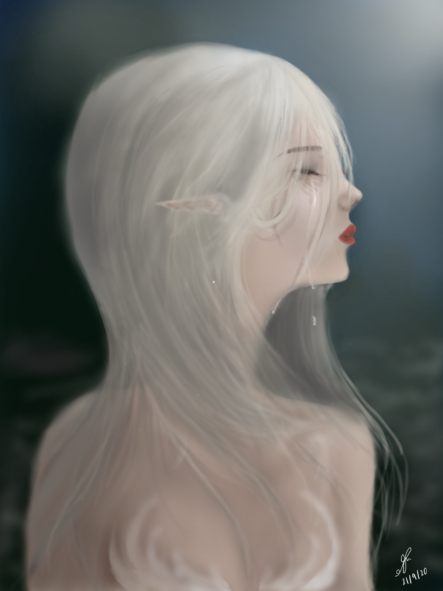

The tear of a mermaid

Im a mermaid not an elf ok .-.
Hover over me to see me in detail.


This started off as a project on krita, in which I later transfered as a psd file to autodesk sketchbook in which I could draw with my 7th gen ipad and apple pencil after i finally upgraded. This took me 2 months to finish it as I had kept on procrastinating.